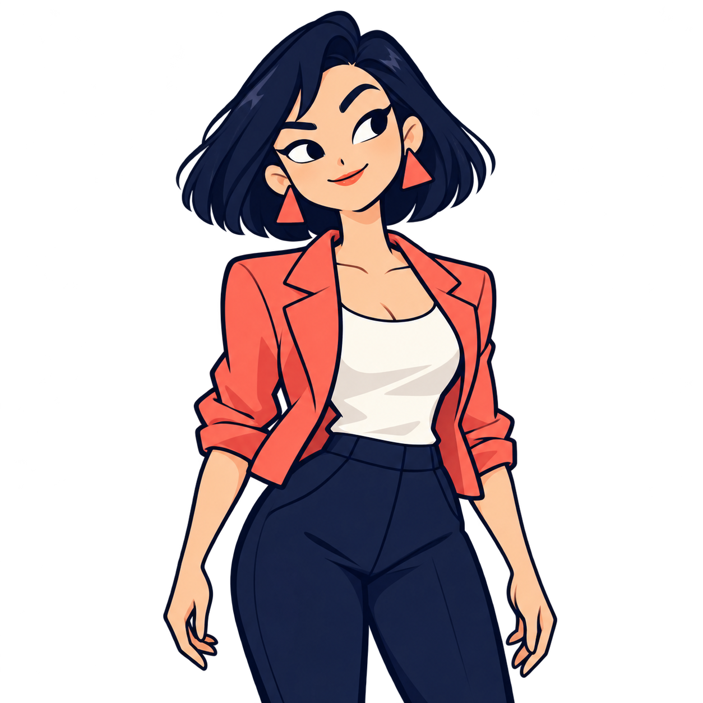

在30px圆形中保留角色感，用同一段假对白比较。没有头像选择器，也不是案件中的新角色。
亲和的玩家化身，帽子提供角色感；最接近人物头像。
我想再确认一下时间。

好，我按记得的顺序说。
请继续，我在听。
放大镜把“仔细问、仔细看”变成小动作；更活泼，但小图细节最多。
以角色剪影代表“这是我的位置”；不指定具体脸，缩小轮廓最简。
上方保留96 / 48 / 30 / 20px查看；转写内头像实际30×30 CSS像素。SVG均为原创原生路径，可编辑、无需字体或图生图。